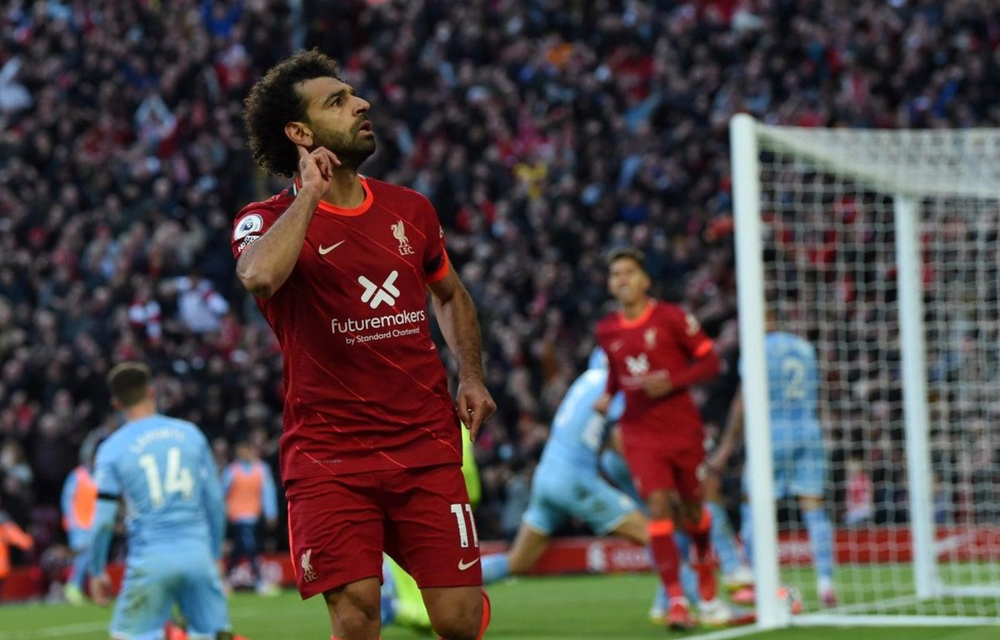

Liverpool
2017

Liverpool được thành lập vào ngày 3 tháng 6 năm 1892 bởi John Houlding và lên chơi tại giải cấp quốc gia trong năm kế tiếp. Đội đã sử dụng sân nhà Anfield từ khi thành lập cho đến nay. Đội thi đấu rất thành công trong thập niên 70 và 80, dưới thời các huấn luyện viên Bill Shankly và Bob Paisley, họ đã giành được 11 chức vô địch quốc gia cùng 7 danh hiệu châu Âu.